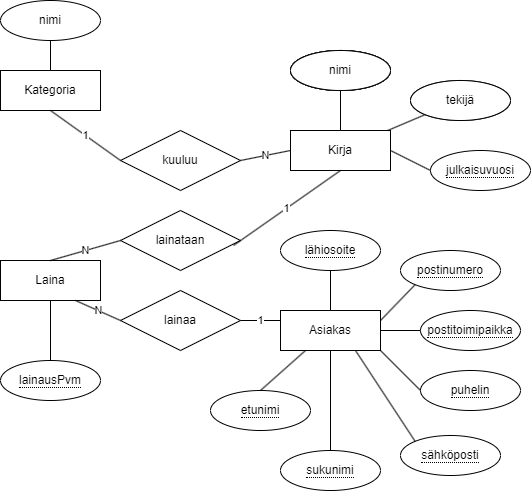

Tietokannoista
Yleistä
Tietokannat ovat kokoelma tietoja jotka on järjestetty siten, että tiedot ovat helposti haettavissa ja päivitettävissä. Tällä kurssilla käydään läpi relaatiotietokannan suunnittelua ja SQL-kieltä. Relaatiotietokantojen lisäksi ohjelmoinnissa käytetään NoSQL-tietokantoja.
Yksinkertaistetusti
- Tietokanta on yhtä tarkoitusta palveleva tietokokonaisuus joka koostuu yhdestä tai useammasta taulusta.
- Taulu sisältää tiettyä asiaa sisältäviä tietoja (esim. opiskelijat, asiakkaat, tuotteet).
- Kenttä (attribuutti) on yksi taulun sisältöä kuvaava tieto (esimerkiksi nimi, osoite, hinta). Kentän tietotyyppi voi olla esimerkiksi päivämäärä, teksti, kokonaisluku tai desimaaliluku.
- Tietue on yksi tapaus taulun tiedoista. Esimerkiksi tietyn opiskelijan tiedot.
- Yhteys (relaatio) yhdistää kahta taulua pää- ja viiteavaimen avulla.
Tietokantakaavio ja ER-kaavio
Tietokantaa voidaan mallintaa käsitekaaviolla (Entity Relationship Diagram).
ER-kaavio

- käsitteet suorakulmioita
- yhteydet vinoneliöitä
- attribuutit soikioita, avaimia ei esitetä kaaviossa
Tietokantakaavio
- taulut kenttineen kaaviossa
- pääavaimet (Primary Key) ja viiteavaimet (Foreign Key) mukana kaaviossa.
- yhteydet voi esittää esimerkiksi "kukonaskel" -merkintätavalla.